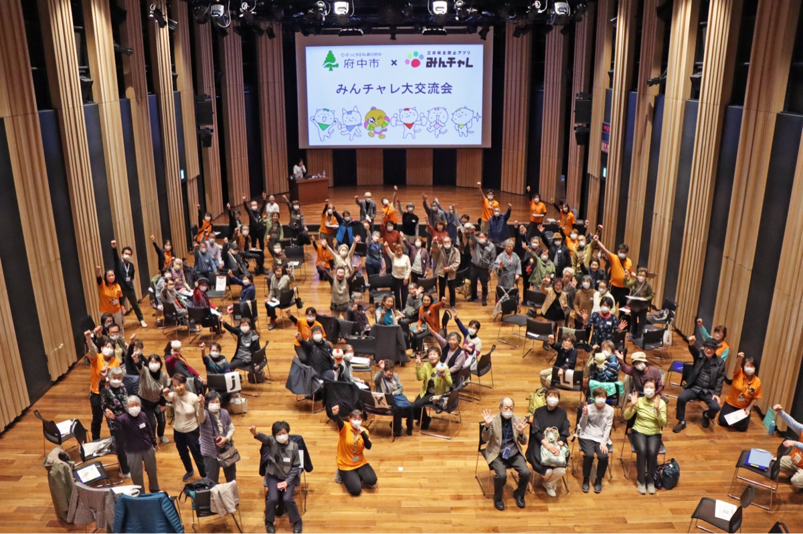
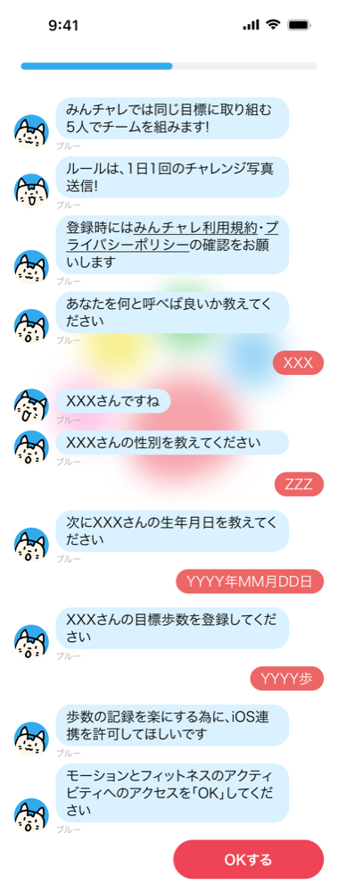
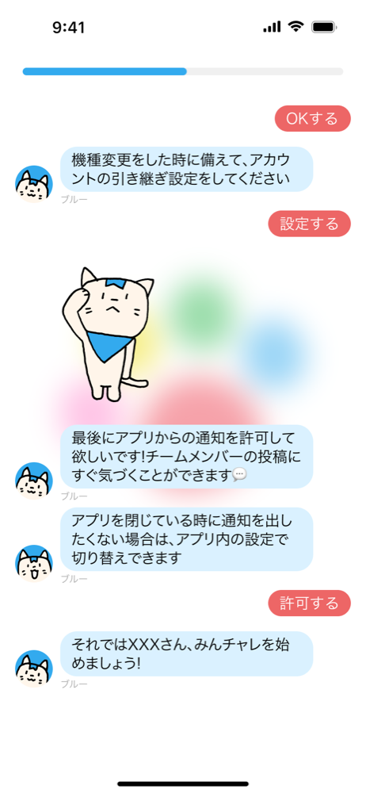
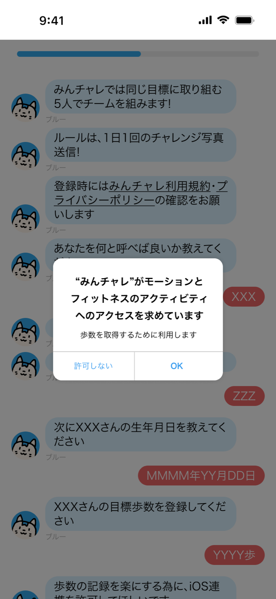
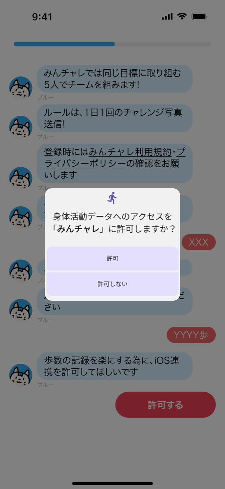
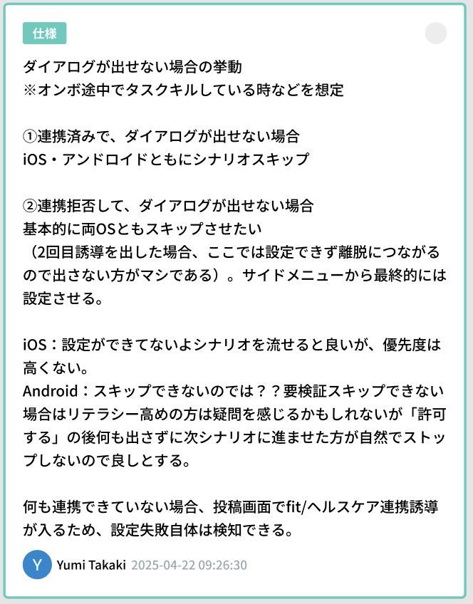
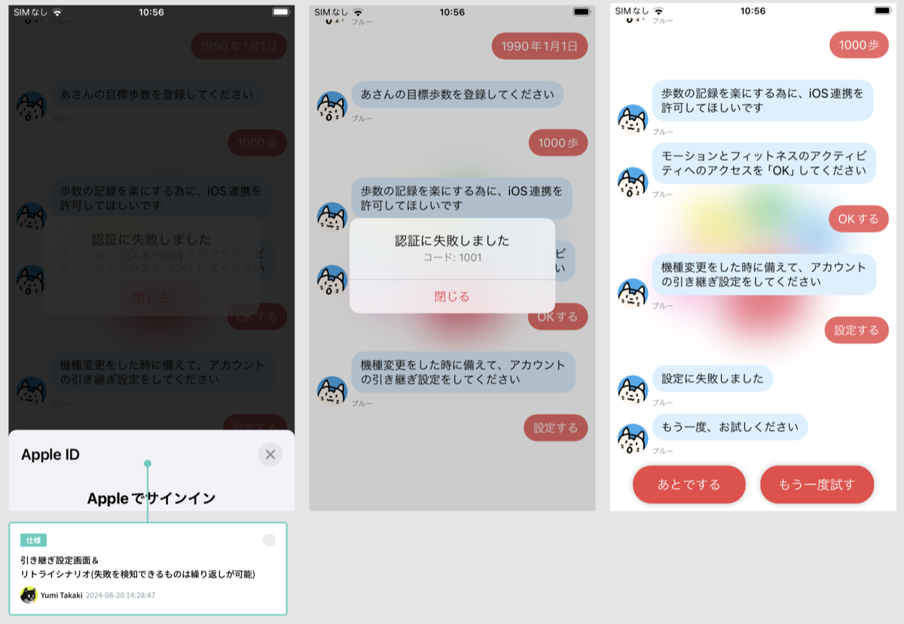
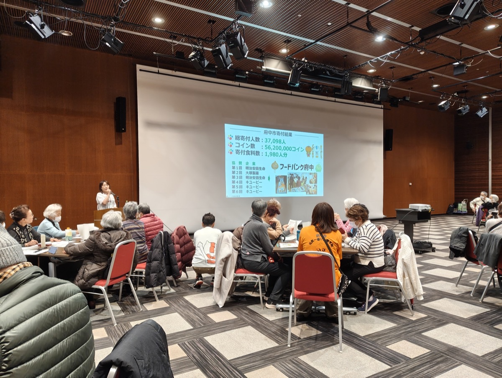

自治体事業
高齢者講座体験改善
PJ体制: Designer 1名（自身） / Engineer 2名 / 営業 1名 / CS 1名
みんチャレは1つのプロダクトでtoC、toB、toGのユーザーが存在し、年齢は小学生から90代までと幅広い。自治体事業におけるBtoGtoCのモデルにおいては高齢社会向けのフレイル予防講座やスマホ活用講座などを展開しており、特に後期高齢者はスマートフォンの操作に不慣れである。全ユーザー1つのオンボーディングで全てを賄っていたが、高齢者専用のオンボーディングを用意することで、決まった時間内に講座内で全ての設定を完了し、高齢者が「一人でもスマートフォンを使える」と自信が持てる体験を提供したい。

府中市で開催した「みんチャレフレイル予防」大交流会の様子
背景
80~90代のユーザーにとって「アカウント」や「連携」「タップ」「スクロール」といった単語は理解が難しい。長時間の講座は疲れてしまうので、自治体側が設定できる講座時間も1時間、長くて1時間30分が限度である。誤ってアカウントを消してしまうことも多く、バックアップを取るために外部アカウントと連携するなど、講座で最低限設定しないといけない項目があるが、「習慣化アプリとしてのみんチャレ」の説明もまた難しく、オンボーディングは長く設定されている。長いオンボーディングの後に難しい設定をiOS、Androidそれぞれのユーザーに合わせて係員が説明をするのに手間取り時間がたりていない。時間内に終わらせられなかった場合にCSが電話対応を行ってはいるが、高齢ユーザーがうまく使えないと自信喪失につながってしまうことを回避したい。
課題
ユーザー体験の課題
運営側の課題
チームビルディング時間の確保。
制約
通常オンボーディング自体が長すぎて離脱が多いことは何度か議題に上がっているが、過去のABテストや複数のオンボーディングを試した中で一番オンボ完走後の継続率・課金率が高いものが現状採用されており、POの意思で変更は不可。
プロセス
ユーザーが何に困っているのか、何に時間がかかっているのかを自分自身で知るため、実際に港区や府中市でフレイル講座に参加し講座全体の様子や、ユーザーの画面操作を観察させていただいた。観察の結果下記のような問題が浮かび上がった。KA法で体験価値を整理し、効果のすぐ出そうなもの・インパクトのありそうなものを優先度高くし、改善することにした。
- 長いオンボーディングを終えた後に、メニューから一個づつ設定をしていたが、アカウント認証やAPI連携で止まってしまうことが多かった。
- iOSの標準UIであるドラムロールは操作の仕方が分からず戸惑う高齢者が多いことがわかった。
- らくらくほんユーザーはある程度文字を大きくする方法がわかっているが、その他のユーザーは文字サイズが変えれること自体を知らず、アプリ外のスマホの使い方をある程度マニュアルに盛り込む必要があることがわかった。
- 1つのチームを１つの机で一人の担当者が説明していることがわかったが、近所の方を同じチームに集めていた。その為OSが異なると説明の時間もかかり、また隣り合った同士お互いの画面を見せて「画面が違う」＝「説明と進捗が違っているかも」「操作を間違えたかも」と不安に感じ説明を求めてしまう。
- ウィジェットを使いこなす80代もいれば、タップがわからない60代もいる。それぞれの知識のばらつきを感じた。

→
高齢者用オンボーディングシナリオ
問題点と解決策_01
高齢者に対しては習慣化アプリではなくフレイル予防アプリとして取り扱ってもらうことに焦点を絞り、オンボーディングを終えればフレイル講座に必要な設定が全て完了するようにシナリオを組み直した専用オンボーディングを作成することにした。
専用の2次元コードから遷移するようにした。


左がiOS
右がAndroid

OS標準の歩数連携設定
問題点と解決策_02

リトライシナリオ
問題点と解決策_03
アカウント認証で失敗すると、止まってしまう。
進めれないとアプリごと落として諦めてしまう。

府中市で行われた大交流会に参加し、ユーザーさんの声を直接聞いてきました。
問題点と解決策_04
端末の種類やOSごとにチーム分けをし、説明担当者の負荷を軽減。
初めましてでも関係性が作れるような、自己紹介タイムやアシスタントを話し合って決めるなどの時間を確保しチームビルディングに注力することにした。
OSごとに内容を変え2種類作成した。
文字の大きさの設定変更など役立つ情報も盛り込んだ。講座内では説明をしないが、リテラシーの高いユーザー向けにアプリを使った寄附の仕方なども盛り込んだ。
成果と振り返り
- 講座時間が1時間で完結できるようになった。基本設定を30分に収めることができたので、残りの30分をチームメンバーとの交流の時間に当て、ピアサポートを強化できた。オペレーションの負荷も軽減できた。
- 高齢者同士がお互いに撮った写真を見せ合い会話が生まれていた。同じ自治体内の住民なので「どこで撮影したの」「どこに住んでいるの」など新しい関係が生まれていてとても良かった。
- 後日行われた交流会イベントで、写真を撮るために遠くまで歩くようになったというユーザーの声がいくつも聞けた。
- 長い時間を理由に断られた自治体でも、再度営業をかけ受注することができた。
- 高齢者に優しくないUIは今後新機能追加する際にも参考にすることにした。
- 内閣府 令和7年度版「高齢社会白書」掲載